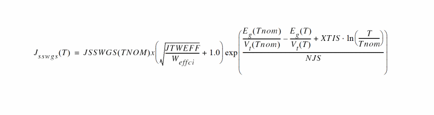
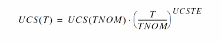
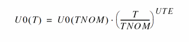
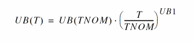

BSIM4 Version 6.2
Width Dependent TAT Model
New Model Parameter
A new model parameter JTWEFF is added to describe the TAT current width dependence.
Change in Equation for Temperature Dependence of Junction Diode IV
Side Source Diode 0

High K Mobility
New Model Parameters
The following new model parameters are added:
The UCS parameter is temperature dependent as given below:

New Mobility Model for High K Material
A new mobility model mobMod=3 is added to enhance the modeling of coulomb scattering in high-k and metal gate transistors.
New Temperature Mode (tempMod = 3) for Mobility
tempMod=3 only affects the mobility. Other parameters, such as Rs and Rd are the same as in tempMod=2.


Return to top